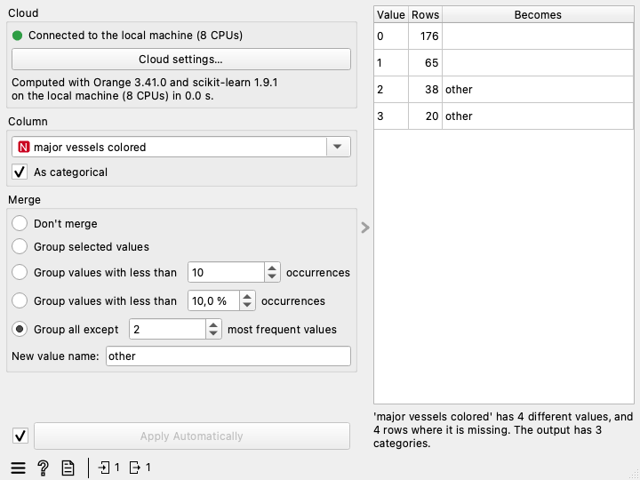

Counts the values of a column of a cloud table on all rows, makes a numeric or text column categorical and merges infrequent values, as Orange's Edit Domain does, with the values and counts of all rows.

Like every Cloud widget, it has a Cloud box at the top: whether a machine is connected, Cloud settings…, and what the last job ran with, how long it took and what it cost. See Cloud widgets.
Choose a column: a categorical, numeric or text column (time columns aren't supported). The machine counts its values on all rows, and the list shows each value, the number of rows that have it, and what it becomes with the settings.
The machine makes the change on all rows with the same settings. Everything else that Edit Domain does (renaming columns, renaming and merging categories by hand, other type changes) works with Orange's own Edit Domain on a cloud table.
Orange's own Edit Domain sees only the placeholder row of a cloud table: its "Merge infrequent" merges nothing, and its "As categorical" is refused when a Cloud widget uses the table.
The changed table is a new table on the machine, about as large as the input. If the machine hasn't enough memory for it, the widget says so; choose a larger machine size in Cloud settings.